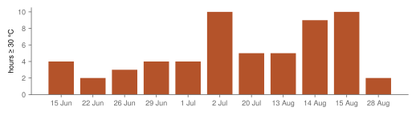
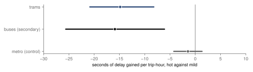
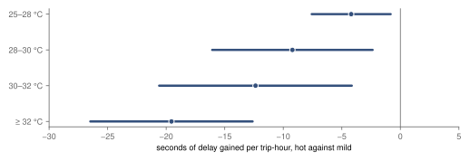
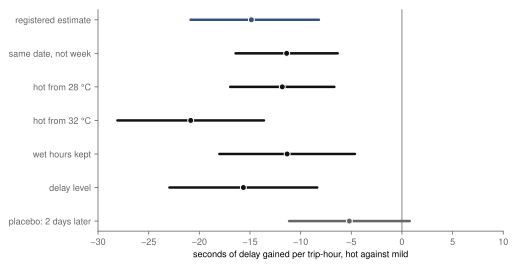

Research · Weather on the rails, part 2 · Prague trams and buses, summer 2025
Are Prague's trams more delayed in hot hours? Hot hours and delay, 2025
In dry hours at 30 °C or more, Prague's trams gained about 14.9 seconds less delay than in mild hours of the same week (−20.9 to −8.2), the opposite of the registered expectation: inconclusive.
- trams, hot against mild
- −14.9 s delay gained per trip-hour · 95 % confidence interval (CI) −20.9 to −8.2 · inconclusive: the opposite sign
- city buses, secondary
- −15.9 s 95 % CI −25.6 to −6.1
- metro, negative control
- −1.4 s 95 % CI −4.2 to 1.3
- hot days in the window
- 11 58 dry hours at 30 °C or more, in 7 weeks
Overwhelmed? Here's the short version
- Part 1 found trams about ten seconds later per trip-hour in rain hours, an association. This part asks the same of hot hours, with the same data and code, and the difference runs the other way; buses gained about 15.9 seconds less, and the metro shows no clear change.
- It rests on 11 hot days of one summer, mostly in the school holidays; the main interval is a bootstrap by day, but the checks' intervals are analytic with about 11 date clusters and are probably too narrow.
- The registered placebo, the heat of two days later, gives −5.2 seconds (−11.1 to 0.8), about 35 % of the main estimate, so part of the contrast may belong to hot spells rather than to hot hours.
- Fewer passengers, less traffic, roadworks paused in the holidays or the holiday timetable could each be behind it; the data cannot distinguish these explanations. Part 3 later found no shorter stops in hot hours.
Photo: Divad · CC BY-SA 4.0, toned

The rain study found that a Prague tram gained about ten seconds more delay in a wet hour than in a dry one, more in heavier rain, and no clear change underground, an association whose registered placebo failed. Heat is the other weather that gets blamed for a slow summer commute: rails and overhead lines have limits, air conditioning fails, passengers move slowly. Studies of weather and transport mostly report slower traffic and changed ridership in extreme heat45; how delay differs for a tram on its own rails is an empirical question the data Prague already has can describe.
The question was written down before any temperature was read. In a dry clock hour at 30 °C or more, does a Prague tram gain more delay than in a mild hour, between 15 and 25 °C, of the same route, direction, hour and weekday, in the same week? The comparison is within the week rather than within the day, because heat lasts all afternoon and a hot day differs from a mild day of the same week, not from its own morning. Buses were measured alongside as a secondary estimate and the metro as a control.
Data
The delays are the rain study's, unchanged: 66 263 tram units in hot or mild dry hours, each a route in one direction in one clock hour, with its trips' mean delay gained, after the same screening for planned closures, feed gaps and thin units. The temperature is the Czech Hydrometeorological Institute's ten-minute air temperature at Ruzyně, Libuš, Kbely and Klementinum3, averaged over the hour and the four stations. An hour counts only if it is dry by the rain study's rule, so that rain and heat do not mix. In the window, 58 dry hours reached 30 °C, on 11 days in 7 weeks between mid-June and late August, the longest runs on 2 July and 13–15 August (fig. 1); eight of the 11 days fell in the school holidays, which began on 28 June, and 15 August was a Friday at the height of the holiday season. The warmest hour averaged 34.6 °C. There were 1 341 mild dry hours to compare them with.
Only 11 days reached 30 °C in a dry hour, from mid-June to late August.

How the estimate works
The model is the rain study's with one change. It has a separate level for every route, direction, hour and weekday, and, instead of a level for every date, one for every week, which absorbs the season, the school holidays and the summer timetable. A hot hour is therefore compared with mild hours of the same route at the same time of day in the same week. It is estimated by ordinary least squares with pyfixest6, clustered by date. Because fewer than 30 days were hot, the interval comes from a wild cluster bootstrap by date7, as the design required, so the evidence counts as 11 hot days rather than 2 572 hot units. The reading rule is the rain study's, set before the data: "supported" if the 95 % interval lies wholly above zero, "not supported" if the 90 % interval lies within ±10 seconds8, and "inconclusive" otherwise. The power calculation, from temperatures and the rain study's measured spread, put the smallest detectable effect at 9.1 seconds.
Trams, buses and the metro
In a dry hour at 30 °C or more, a Prague tram gained 14.9 seconds less delay than in a mild hour of the same route, hour and weekday in the same week (95 % CI −20.9 to −8.2). The design expected more delay, so the interval does not lie above zero, nor within ±10 seconds; by the rule the hypothesis is inconclusive, and the reason is that the estimate has the opposite sign. The raw averages point the same way: a tram trip gained 50.8 seconds in an average hot hour and 57.1 in an average mild one. Buses gain 15.9 seconds less in a hot hour (−25.6 to −6.1), from 45.9 to 38.1 seconds on average. The metro, underground and on its own track, shows −1.4 seconds (−4.2 to 1.3), close to zero (fig. 2).
In hot hours, trams gained 14.9 s less delay than in mild ones (−20.9 to −8.2); buses likewise; the metro shows no clear change.

Hotter hours, less delay gained
Split by temperature, the difference is larger in hotter hours. Against mild hours, trams gain −4.2 seconds of delay at 25–28 °C (−7.6 to −0.8), −9.2 at 28–30 °C (−16.1 to −2.4), −12.4 at 30–32 °C (−20.6 to −4.2) and −19.6 at 32 °C or more (−26.5 to −12.6) (fig. 3). The bands are not independent evidence: the hottest hours fall on the same few days, so the pattern can come from those days as easily as from temperature, and the intervals are analytic, clustered by date over about 11 hot days, and probably too narrow. The hottest band rests on the fewest hours.
Hotter hours went with less delay gained: −4.2 s at 25–28 °C, −19.6 s at 32 °C or more.

Checks
The registered checks keep the sign, but their intervals are analytic, clustered by date over about 11 hot days, and probably too narrow (fig. 4). Comparing within the date instead of the week, as the rain study did, gives −11.4 seconds (−16.4 to −6.3). Calling an hour hot from 28 °C gives −11.8 (−16.9 to −6.7), and from 32 °C −20.9 (−28.1 to −13.6). Keeping wet hours, with rain in the model, gives −11.3 (−18.0 to −4.6), and measuring the delay a tram carries rather than the delay it gains gives −15.7 (−22.9 to −8.4). The placebo, which uses the heat of the same hour two days later, should be near zero; it is −5.2 seconds (−11.1 to 0.8), about 35 % of the main estimate. Its interval includes zero, but its point estimate is not small, which suggests that part of the contrast belongs to hot spells, or to the weeks they fall in, rather than to the hot hour.
Every check but the placebo has an interval below zero (analytic, about 11 date clusters); the placebo, −5.2 s, includes zero but is about 35 % of the main estimate.

What this means
Measured: on the hottest afternoons of summer 2025, Prague's trams and buses fell behind their timetables more slowly than on mild afternoons of the same weeks, by about 14.9 seconds per trip and hour for trams, about 26 % of a mild hour's delay gained. The registered hypothesis expected the reverse. The study cannot say why. Fewer passengers, fewer cars at junctions, roadworks or diversions that differ between hot and mild days, and the holiday timetable are all possible, and the data cannot distinguish these explanations; the placebo suggests part of the contrast belongs to hot spells rather than hot hours. Ridership and traffic were not measured here. A note added on 9 October 2026: part 3 of this series, published the same day as this part, found no shorter tram stops in hot hours (−0.12 s per stop), so fewer passengers boarding is not supported by dwell; traffic remains untested. For a timetable planner, the result is a description of 2025's 11 hot days, not a forecast for other summers.
What this does not show
The result rests on 11 hot days of one summer, between mid-June and late August, most of them in the school holidays, with holiday timetables and lighter commuting, 4 of them Sundays, and one of them, 15 August, at the height of the holiday season; week effects absorb some of this but not differences between days of the same week. A different summer could look different; the bootstrap widens the main interval for that, but it cannot add days, and the checks' intervals are analytic. A hot hour bundles many things, from the number of passengers to traffic, roadworks and heat faults on vehicles and overhead lines, and the estimate is their sum. The placebo is not clean. Temperature is measured at four stations, none of them on the tram network, not on the rails or in the vehicles. The study says nothing about comfort on board, about heat above the 34.6 °C of the warmest hour, or about other years and cities.
Reproduction
Every number on this page is filled in from the result files by a script, from the repository root:
- The rain study's steps, which build and screen the units: Are Prague's trams later in rain hours?, Reproduction.
tools/heat/power.py: hot and mild hours and the power calculation.estimate.py, checked bytest_heat.py: the registered estimates and checks.describe.pyandarticle.py: the descriptive numbers, the figures and this page.
The design is docs/research/heat-delays-design.md.
References
- Šandová, B. (2026). Persistence Dynamics and Welfare Costs of Urban Public Transport Delays. Master's thesis, Institute of Economic Studies, Faculty of Social Sciences, Charles University, Prague. Summary at bsandova.com/texts/thesis. Not yet in a public repository.
- Operátor ICT. Golemio, Prague's open-data platform: Prague Integrated Transport stop-time history, collected 15 March – 8 September 2025. golemio.cz. Accessed 8 October 2026.
- Czech Hydrometeorological Institute (ČHMÚ). Open climate data: ten-minute air temperature (T) and hourly precipitation (SRA1H), stations Praha-Ruzyně, Praha-Libuš, Praha-Kbely and Praha-Klementinum, 2025; CC BY 4.0. opendata.chmi.cz. Accessed 8 October 2026.
- Koetse, M. J., Rietveld, P. (2009). The impact of climate change and weather on transport: an overview of empirical findings. Transportation Research Part D 14(3), 205–221. doi:10.1016/j.trd.2008.12.004. Accessed 8 October 2026.
- Arana, P., Cabezudo, S., Peñalba, M. (2014). Influence of weather conditions on transit ridership: a statistical study using data from smartcards. Transportation Research Part A 59, 1–12. doi:10.1016/j.tra.2013.10.019. Accessed 8 October 2026.
- Fischer, A., and contributors. pyfixest: fast high-dimensional fixed-effects regression in Python, version 0.60.0. github.com/py-econometrics/pyfixest. Accessed 8 October 2026.
- Cameron, A. C., Gelbach, J. B., Miller, D. L. (2008). Bootstrap-based improvements for inference with clustered errors. The Review of Economics and Statistics 90(3), 414–427. doi:10.1162/rest.90.3.414. Accessed 8 October 2026.
- Lakens, D. (2017). Equivalence tests: a practical primer for t tests, correlations, and meta-analyses. Social Psychological and Personality Science 8(4), 355–362. doi:10.1177/1948550617697177. Accessed 8 October 2026.